Conheça os melhores filmes da Barbie.
Uma seleção especial de filmes que mostram que a Barbie vai muito além de uma boneca. É sobre sonhos, amizade, coragem e tudo o que nos faz acreditar em um mundo melhor.
Uma seleção especial de filmes que mostram que a Barbie vai muito além de uma boneca. É sobre sonhos, amizade, coragem e tudo o que nos faz acreditar em um mundo melhor.
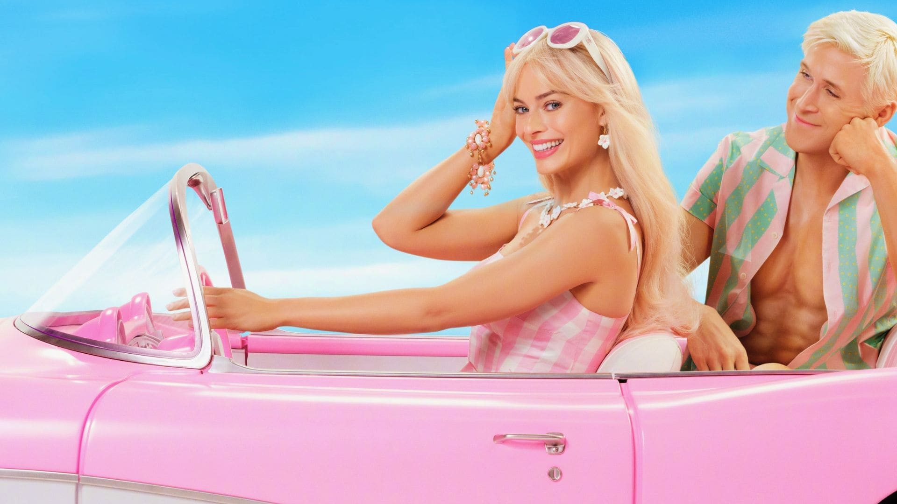
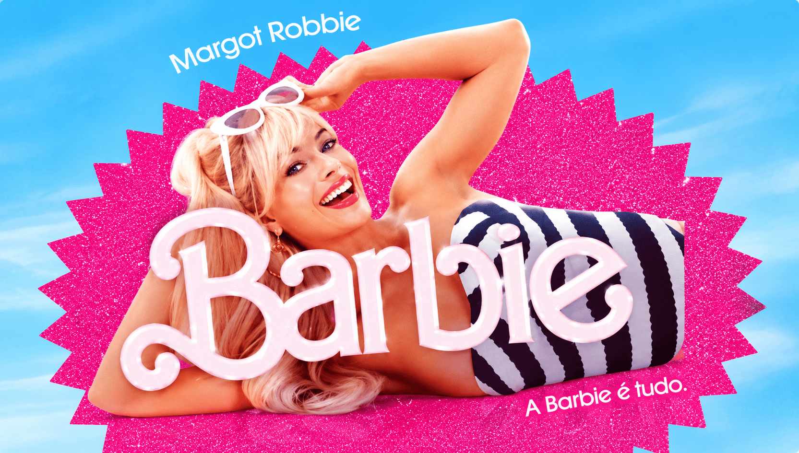
A icônica boneca ganha vida em uma aventura cheia de humor, reflexão e muita cor.
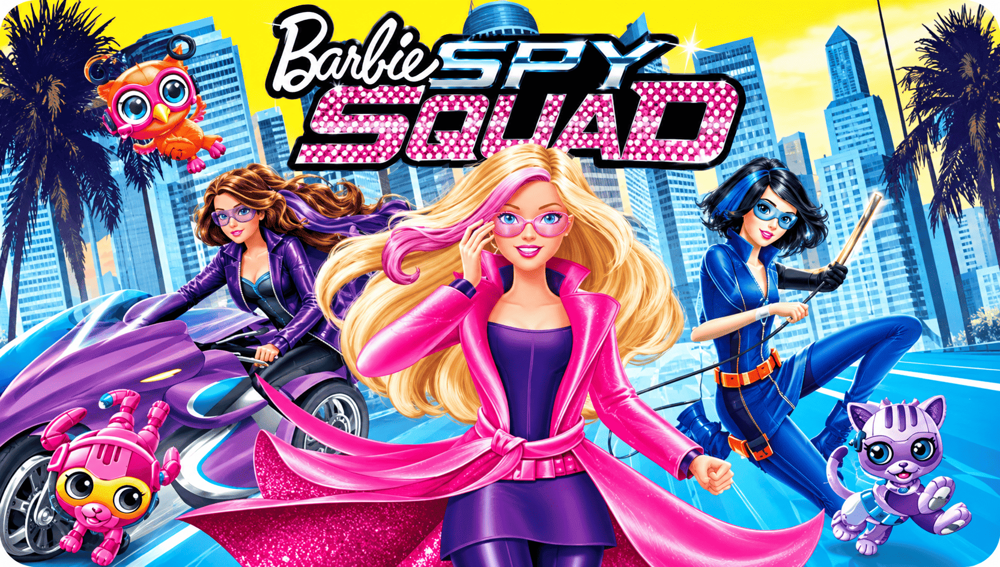
A Barbie e suas amigas se transformam em agentes secretas para salvar o mundo da ameaça de um vilão malvado.
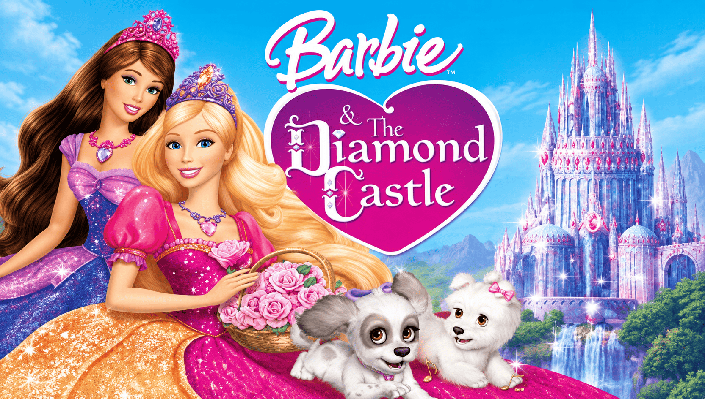
Barbie descobre um segredo sobre seu lar e embarca em uma jornada para proteger o castelo de uma ameaça.
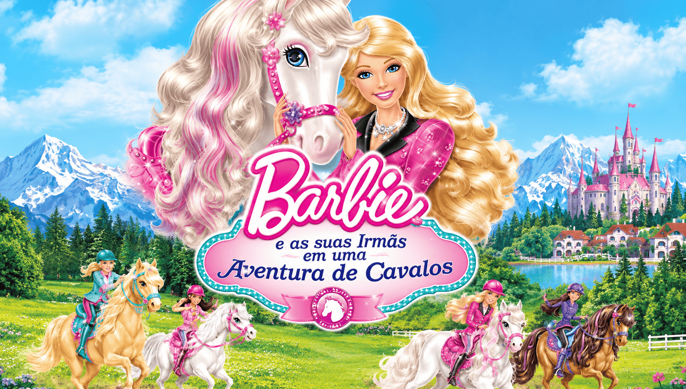
Barbie descobre um cavalo mágico e embarca em uma aventura.
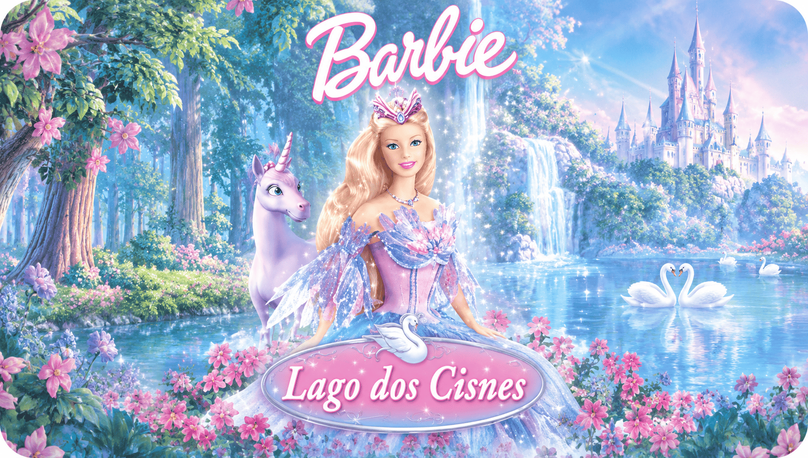
Barbie se une a outras criaturas mágicas em uma jornada para salvar o lago dos cisnes.
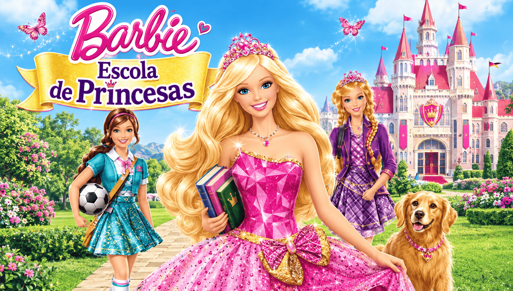
Barbie descobre uma escola de magia e embarca em uma aventura para proteger o reino de uma ameaça.
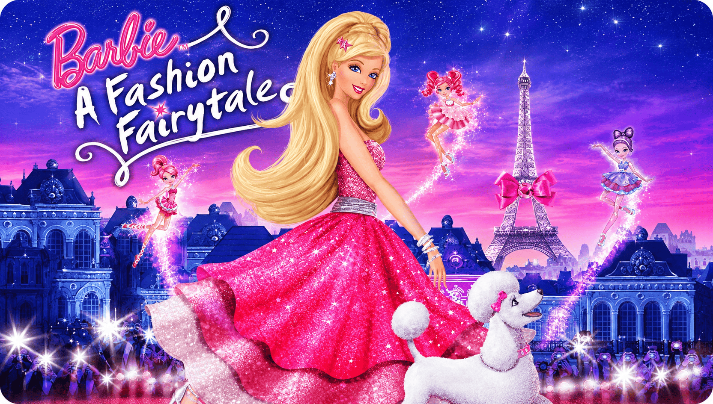
Barbie explora o mundo da moda e da magia em uma aventura cheia de estilo e encantamento.
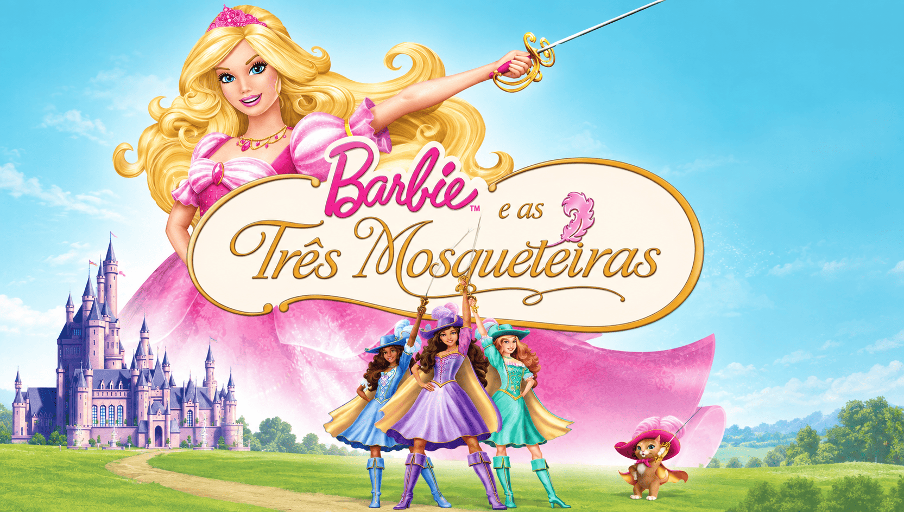
Corinne viaja a Paris com o sonho de se tornar uma mosqueteira do rei
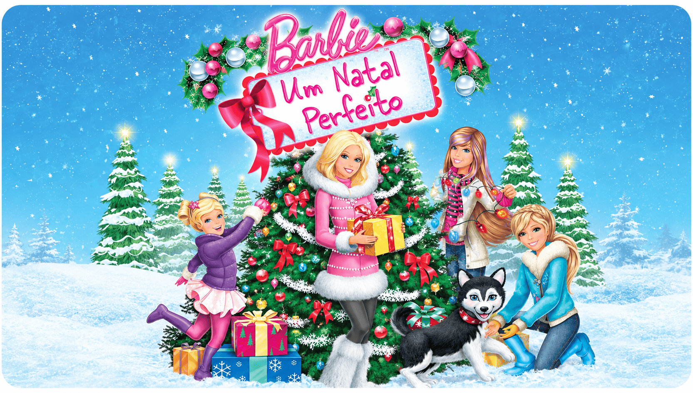
Barbie salva o natal e tem um natal mágico com suas irmãs
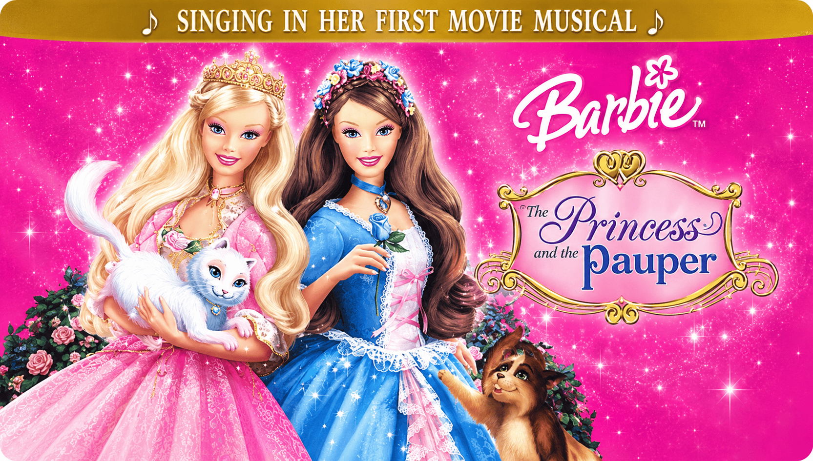
Barbie vive uma aventura como princesa e plebéia, aprendendo sobre amizade e coragem.
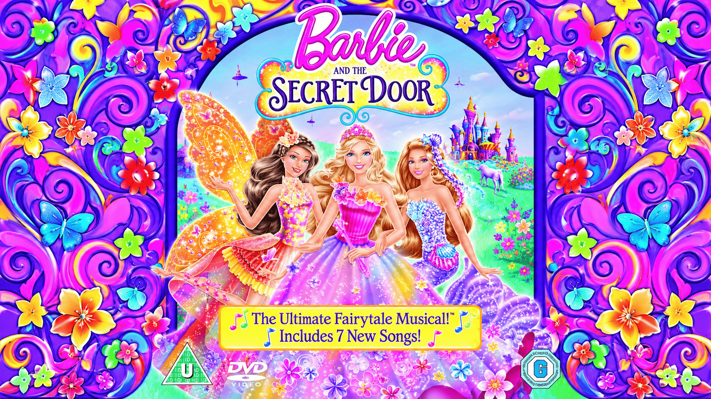
Barbie descobre um portal secreto e embarca em uma aventura para salvar o mundo de uma ameaça.
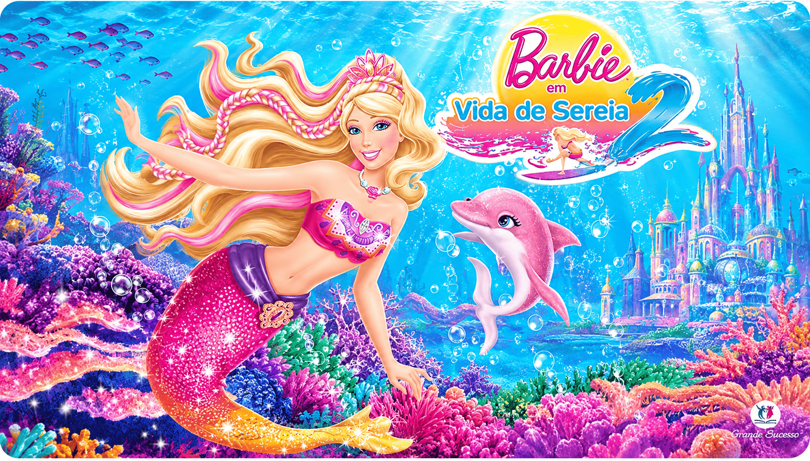
Barbie embarca em uma aventura no fundo do mar, onde descobre segredos sobre sua origem e encontra amigos inesperados.